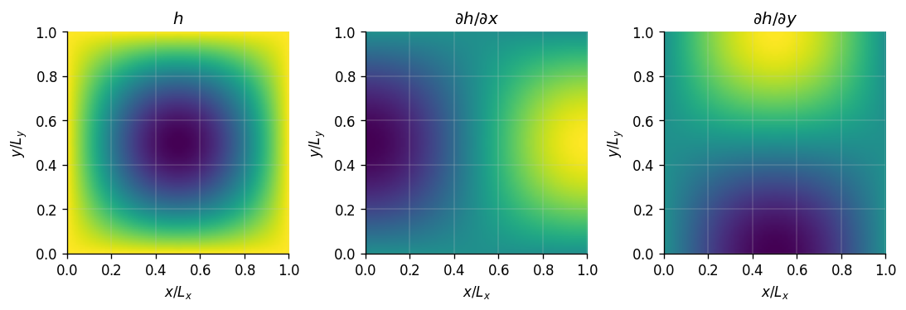
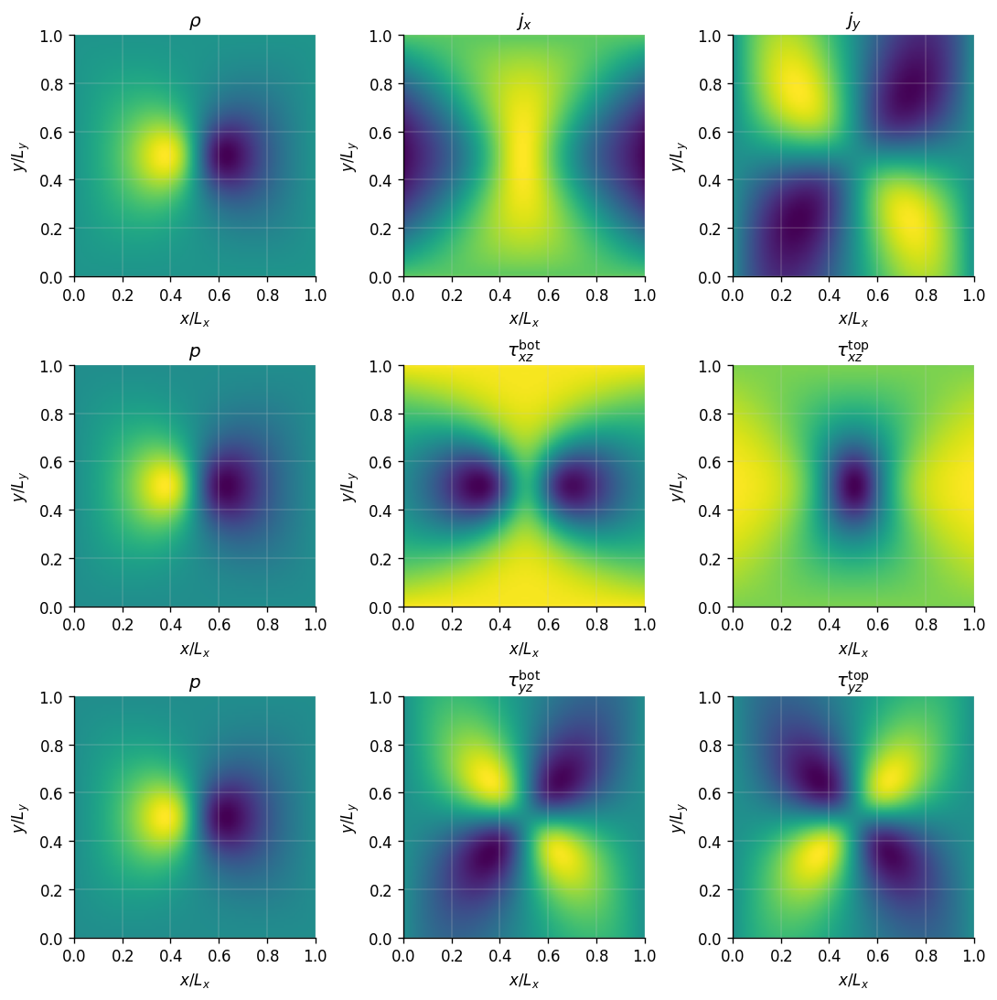

6. Lubrication (2D)#
Two-dimensional problems are configured in the same way but have Ny > 1. Here, we look at the lubricant flow around a model asperity.
asperity_input = """
options:
output: data/asperity_lj
write_freq: 100
use_tstamp: True
grid:
Lx: 1470.
Ly: 1470.
Nx: 100
Ny: 100
xE: ['D', 'N', 'N']
xW: ['D', 'N', 'N']
yS: ['D', 'N', 'N']
yN: ['D', 'N', 'N']
xE_D: 0.8
xW_D: 0.8
yS_D: 0.8
yN_D: 0.8
geometry:
type: asperity
hmin: 12.
hmax: 60.
U: 0.12
V: 0.
numerics:
CFL: 0.5
adaptive: 1
tol: 1e-8
dt: 0.05
max_it: 5_000
properties:
shear: 2.15
bulk: 0.
EOS: BWR
T: 1.0
rho0: 0.8
"""
from GaPFlow import Problem
asperity_problem = Problem.from_string(asperity_input)
*************************************************************
* PROBLEM SETUP *
*************************************************************
- options:
- output : data/asperity_lj
- write_freq : 100
- use_tstamp : True
- silent : False
- grid:
- Nx : 100
- Lx : 1470.0
- dx : 14.7
- Ny : 100
- Ly : 1470.0
- dy : 14.7
- dim : 2
- bc_xE_P : [False, False, False]
- bc_xE_D : [True, False, False]
- bc_xE_N : [False, True, True]
- bc_xW_P : [False, False, False]
- bc_xW_D : [True, False, False]
- bc_xW_N : [False, True, True]
- bc_xE_D_val : 0.8
- bc_xW_D_val : 0.8
- bc_yS_P : [False, False, False]
- bc_yS_D : [True, False, False]
- bc_yS_N : [False, True, True]
- bc_yN_P : [False, False, False]
- bc_yN_D : [True, False, False]
- bc_yN_N : [False, True, True]
- bc_yS_D_val : 0.8
- bc_yN_D_val : 0.8
- geometry:
- U : 0.12
- V : 0.0
- type : asperity
- flip : False
- hmin : 12.0
- hmax : 60.0
- num : 1
- numerics:
- tol : 1e-08
- max_it : 5000
- dt : 0.05
- adaptive : True
- CFL : 0.5
- MC_order : 1
- properties:
- shear : 2.15
- bulk : 0.0
- EOS : BWR
- T : 1.0
- gamma : 3.0
- rho0 : 0.8
- elastic:
- enabled : False
- gp:
- db:
- md:
*************************************************************
* PROBLEM SETUP COMPLETED *
*************************************************************
Writing output into: data/2026-02-26_105704_asperity_lj
The plot_topo function gives us a qualitative view of the gap topography.
asperity_problem.plot_topo()

asperity_problem.run()
-------------------------------------------------------------
Step Timestep Time CFL Residual
-------------------------------------------------------------
0 1.8560e+00 0.0000e+00 5.0000e-01 1.0000e+00
100 1.7522e+00 1.7892e+02 5.0000e-01 1.2871e-03
200 1.7558e+00 3.5422e+02 5.0000e-01 1.5319e-04
300 1.7552e+00 5.2979e+02 5.0000e-01 2.0947e-05
400 1.7553e+00 7.0531e+02 5.0000e-01 2.3957e-06
500 1.7553e+00 8.8084e+02 5.0000e-01 3.0981e-07
600 1.7553e+00 1.0564e+03 5.0000e-01 4.4158e-08
619 1.7553e+00 1.0897e+03 5.0000e-01 2.5133e-09
=================================
Total walltime : 0:00:19
(32.08 steps/s)
=================================
asperity_problem.plot()
